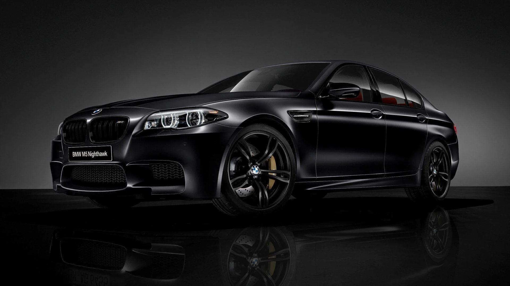
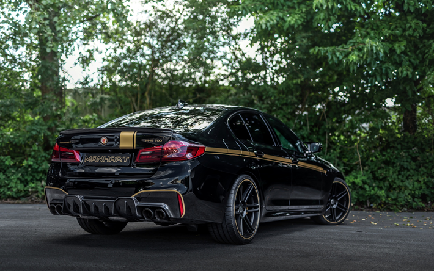
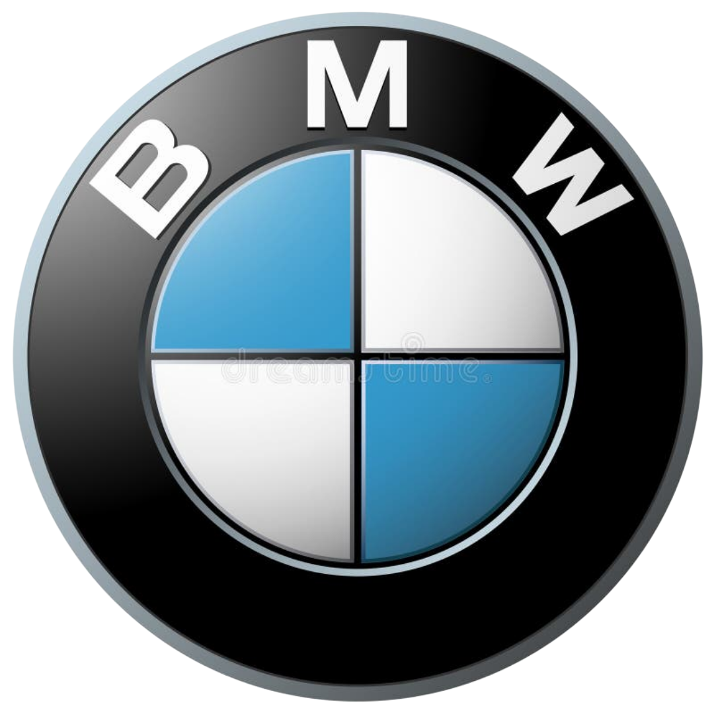

BMW (Bayerische Motoren Werke) is a German multinational company known for producing luxury vehicles and motorcycles. Founded in 1916, BMW initially focused on aircraft engines, later expanding into automobiles and motorcycles. It is renowned for its innovative engineering, high-performance vehicles, and premium quality, often associated with driving dynamics and luxury features. BMW's product lineup includes sedans, SUVs, electric vehicles, and performance models under the "M" series. The brand emphasizes precision, sustainability, and cutting-edge technology, maintaining a strong global presence.

.
The Journey Of BMW:
BMW, short for Bayerische Motoren Werke AG (Bavarian Motor Works), has a fascinating journey that spans over a century. Here's an overview of its key milestones:
1. Founding and Early Years (1916-1930s)
1916: BMW was originally founded as an aircraft engine manufacturer. Its roots trace back to Rapp Motorenwerke, which was restructured to form BMW in Munich, Germany.
1917: The company developed its first aircraft engine. The blue-and-white roundel logo was adopted, symbolizing Bavaria's state colors.
Post-WWI: After World War I, the Treaty of Versailles banned Germany from producing aircraft engines, forcing BMW to diversify into motorcycle production.
,
2. Motorcycles and Automobiles (1920s-1930s)
1923: BMW produced its first motorcycle, the BMW R32, which laid the foundation for its future in two-wheeled production.
1928: BMW acquired a car factory in Eisenach and entered the automobile market by producing its first car, the BMW 3/15, based on an Austin design.
3. WWII and Post-War Rebuilding (1939-1950s)
During World War II, BMW focused on producing aircraft engines again. Post-war restrictions and destruction left the company in a dire situation.
1948: BMW slowly recovered by resuming motorcycle production, introducing the R24 model.
1952: The first post-war BMW car, the 501 luxury sedan, marked the company's return to automobile production.
4. Rebirth and Expansion (1960s-1980s)
1962: The launch of the "New Class" sedans, like the BMW 1500, was pivotal in re-establishing BMW as a competitive car manufacturer. This was followed by the famous BMW 2002, which cemented the brand's sporty image.
1972: BMW introduced its first 5 Series sedan, laying the foundation for its now-iconic numbering system for different model lines.
1978: BMW entered the high-performance market with its first M-series car, the BMW M1, designed for racing.
5. Technological Innovation and Global Success (1990s-Present)
1990s: BMW continued expanding its lineup with the launch of the X Series (SUVs) and enhanced technological features, such as the iDrive system.
2000s: BMW became a global leader in luxury cars, recognized for its high-performance engineering, design, and innovation. It acquired other brands, such as MINI and Rolls-Royce.
2010s and beyond: The company embraced electric and hybrid technology with the i Series (e.g., BMW i3 and i8) and continues to push toward sustainability, including autonomous driving technologies.

.
The Achievements Of BMW:
BMW's achievements over the decades have been extensive, marking its place as one of the world’s leading luxury automobile manufacturers. Here are some of the major achievements:
,
1. Engineering Excellence
Precision and Performance: BMW is known for its focus on driving dynamics and precision engineering. The development of engines, from aircraft to motorcycles to cars, has always emphasized performance, durability, and innovation.
Efficient Dynamics: BMW’s focus on blending performance with fuel efficiency has been demonstrated through technologies like EfficientDynamics, which aims to reduce emissions without compromising power.
2. Luxury Market Leader
Premium Brand: BMW established itself as one of the most recognized luxury automobile brands in the world. Its vehicles are synonymous with quality, luxury, and performance, appealing to a global market.
Diverse Model Range: From high-performance M-Series cars to luxury SUVs in the X-Series and electric vehicles like the i-Series, BMW's lineup caters to a wide variety of customer needs.
3. Innovation in Electric Mobility
BMW i-Series: The launch of the electric i3 and hybrid-electric i8 marked BMW's pioneering step into sustainable and green technology. The company was among the first luxury carmakers to venture seriously into electric mobility, combining sustainability with performance.
Commitment to Sustainability: BMW is dedicated to achieving sustainability goals, with plans to make all its production facilities climate-neutral by 2030.
4. Technological Leadership
iDrive System: BMW was one of the first manufacturers to implement an advanced infotainment system with the iDrive, which has since become a benchmark in the automotive industry.
Autonomous Driving: BMW continues to invest in autonomous driving technology, with features like the Driving Assistant Plus in its newer models, offering advanced safety and semi-autonomous driving capabilities.
5. Motorsport Success
BMW M Performance: BMW’s M division has been a consistent leader in motorsports, with a rich history in touring car racing and Formula 1. The M-Series vehicles are high-performance models designed with racing technology and expertise.
Endurance Racing: BMW has achieved multiple victories at prestigious events like the 24 Hours of Le Mans, cementing its place as a key player in the world of motorsport.
6. Global Expansion
Worldwide Presence: BMW has manufacturing plants across the world, from Germany to the U.S. and China, producing millions of vehicles each year to meet global demand.
Luxury Market Dominance: BMW regularly competes with brands like Mercedes-Benz and Audi in the global luxury market, and it consistently ranks among the top luxury automakers by sales volume.
7. Innovative Manufacturing
Carbon Fiber Production: BMW has pioneered the use of lightweight materials like carbon fiber in mass automobile production. The BMW i3 and i8, in particular, benefited from this innovation, making them lighter and more efficient.
.
How The Logo Of BMW Found:

The logo of BMW (Bayerische Motoren Werke) is often associated with its origins in aviation, as BMW originally produced aircraft engines. The iconic roundel design, first introduced in 1917, has a central circle divided into four quadrants in alternating blue and white, which are the colors of the Bavarian flag.
A common myth about the logo is that it represents a spinning airplane propeller, with the blue and white symbolizing the sky and propeller blades. This belief gained traction due to a 1929 BMW advertisement that depicted the logo overlaid on a propeller. However, this was not the original intent behind the design.
The actual origin of the BMW logo stems from the company's rebranding when it shifted from producing aircraft engines to automobiles and motorcycles. The blue and white colors pay homage to the company's roots in Bavaria, and the circular design was inherited from the logo of Rapp Motorenwerke, a company BMW evolved from.
So while the "propeller myth" has become part of popular culture, the BMW logo is more about honoring Bavarian heritage than aviation imagery.